ShoppersMap
| Shopper’s Map is an engaging new way for users to shop at their supermarket. The user can form a shared shopping list and the app allows for a better supermarket navigation experience. | |
| Case Study |
Shopper’s Map is an engaging new way for users to shop at their supermarket. The user can form a shared shopping list and the app allows for a better supermarket navigation experience.

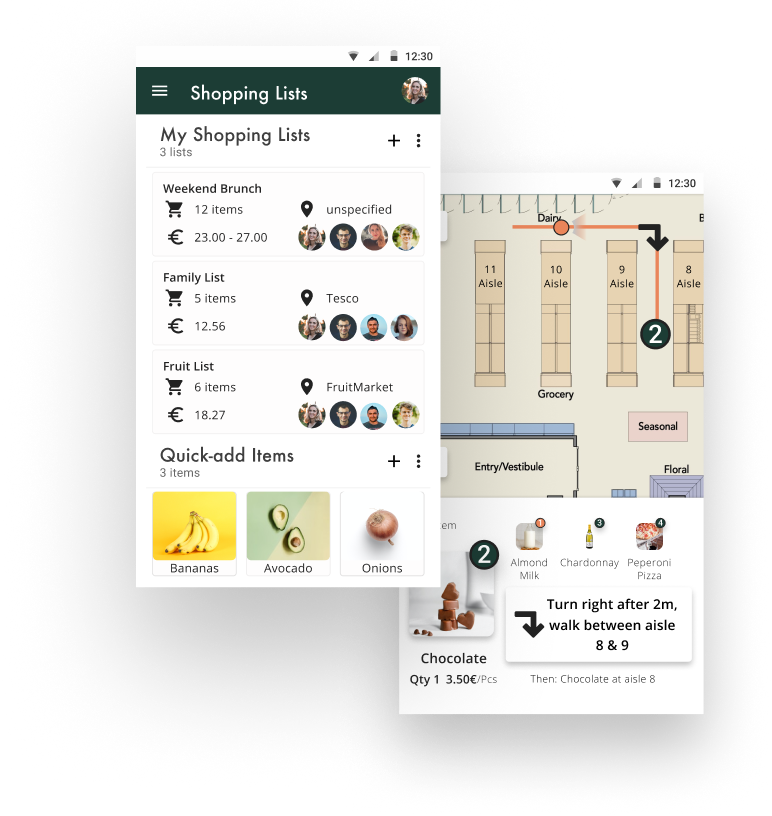
Table of Contents
Problems
- Shopping for a group is difficult, considering all the individual requirements, updating them and delivering items.
- I want to be flexible on how I do the shopping. Quick, when I don’t have time to look around for items.
Goal
- To create an application that allows the whole family to use a shared shopping list.
- To create an in-store navigation map of the supermarket and aid in a better collection of items.
Process

Phase 1: Empathise
Going off from our personal experience, we hypothesized that shopping for a family could have some difficulties and wanted to investigate further.
12 User Interviews
All interviews were held online through video calls. As a team, we collectively prepared the interview questionnaire and an observational template.
Key Findings of the interviews
Planning
- Most people want to shop quickly. But depending on their time availability they want to look around.
- Majority writes a list and know what they want to buy.
- Written list vs. mental list.
Shopping
- General problems: getting lost in the supermarket, not finding items.
- Most people plan the order of putting items in their cart to some extent.
- Everyone is annoyed when supermarket changes the location of items.
Phase 2: Define
Then we came down as a group and had a brainstorming session to note down our ideas and aggregate our findings to set the goal. The outcome of a series of 3 meetings was:
- Affinity Diagram.
- Two User Profiles.
- Value proposition canvas.
- Empathy map derived from the VPC.

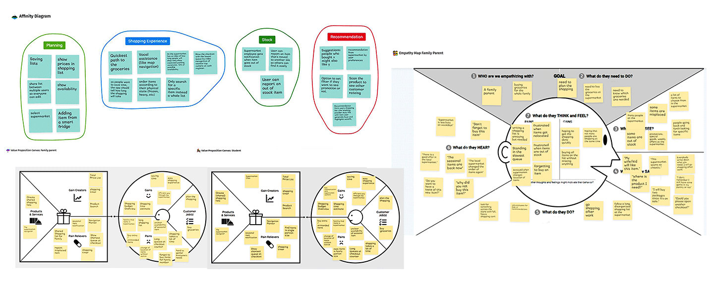
We found that based on the way users shop, there are two profiles emerging with different goals and expectations. And we did not have enough information on each profile to make a persona. So we made User profiles.

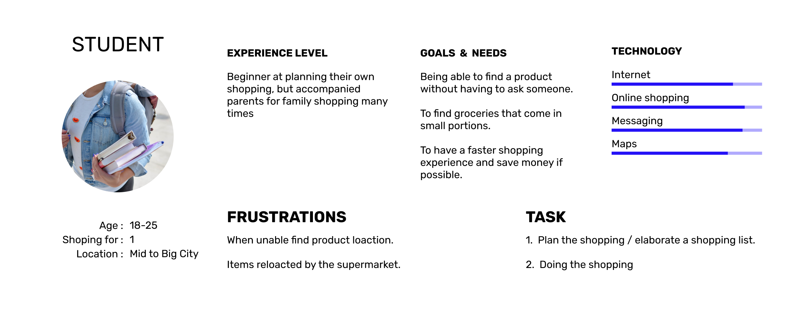

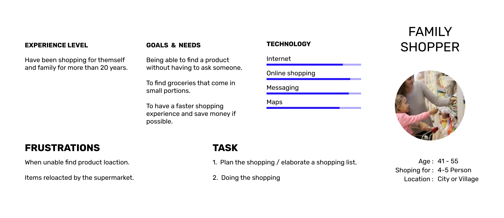
We identified two problems and defined the goal that needs to be achieved to solve the problems. They are mentioned at the starting of the case study.
Phase 3: Ideate
User Journey Map
From the information gathered, we organized the user tasks and then created a User Journey Map to understand the users’ experience throughout the process.
We then focused only on the family shopper, as addressing the needs of this profile would address most of the needs of the Student profile. During prototyping, we wanted to test with profiles and validate this.

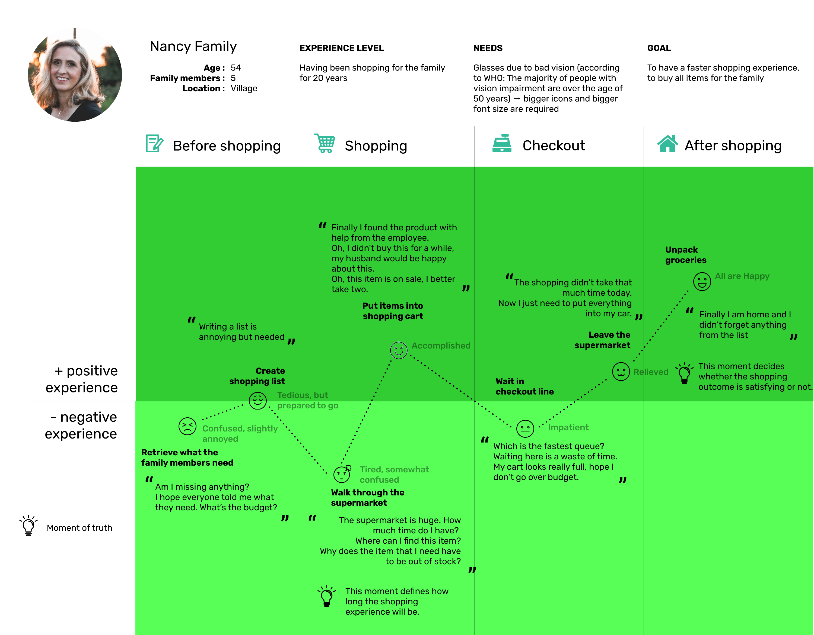
Design Sprint
We used the 4 step sketch framework:
- Notes
- Ideas
- Crazy 8s
- Solution Sketch
Crazy 8s

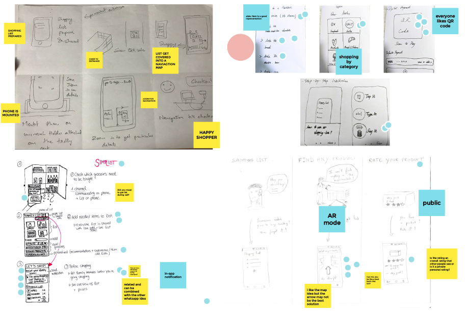
We then mapped our ideas onto the Task Organization Model we built during the sprint from our User Journey Map.

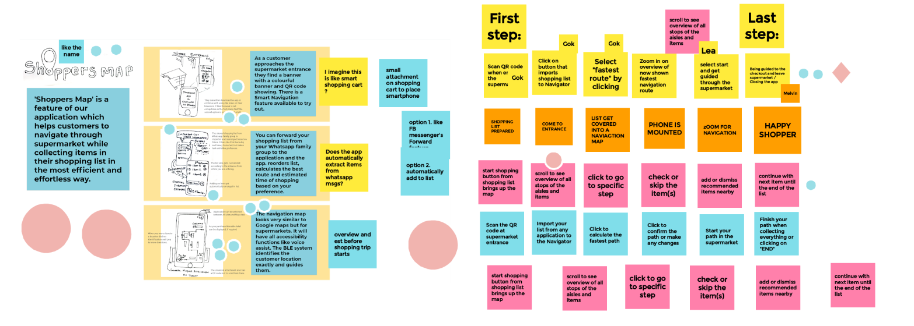
Story Board

Phase 4: Prototype
The Usability Attributes which were given top priority for the design were:
- Efficiency
- Effectiveness
- Satisfaction
Interaction style would be Menus and Forms, for a Mobile device.
Based on the TOM, we defined a controlled Task and a Task Scenario with our Low-fi Sketches. Due to time constraints, we couldn’t test our Low Fi sketches so we conducted testing on the High Fidelity prototype.
We have tried to use Material Design in our design.
Style Guide

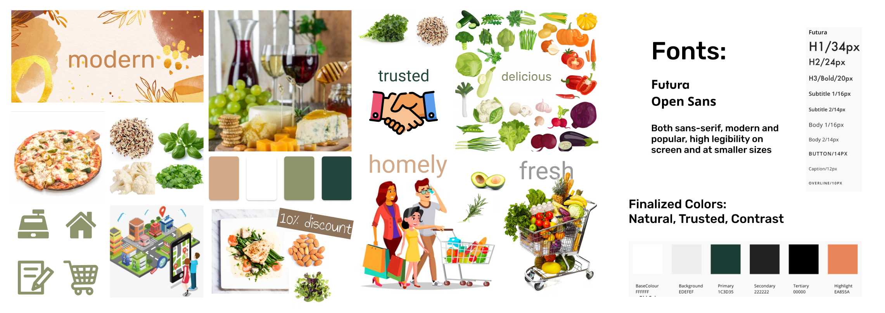
We gained a deep understanding of the principles of modular design, design systems, libraries and variants for fast and efficient prototyping.

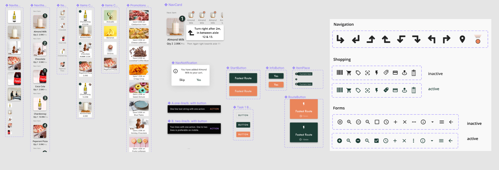

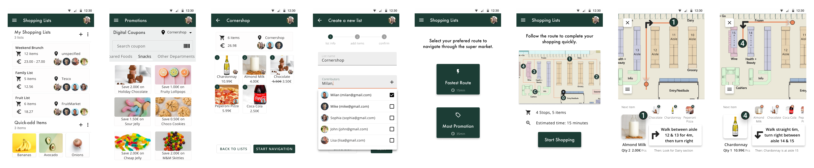
Testing
Usability Test: 16 subjects

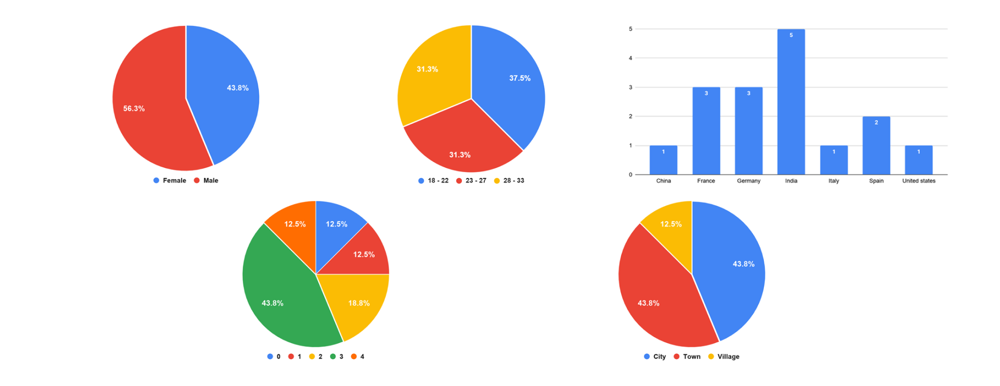
Task Scenarios
Task 1: “Imagine that you are Nancy, a 54-year-old mother, living in Dublin with your husband Mike and your son Milan. You have been doing the grocery shopping for the whole family for 20 years. Being responsible of buying the groceries for everyone as well as working full-time has its obstacles and is stressful. Nancy’s goal is to have a fast shopping experience and to buy all needed items for the family. Apps like the ShoppersMap app help you to manage the planning of the shopping in collaboration with your family as well as to get the shopping itself done quickly, adjustable to your needs and current situation.”
Task 2: “Imagine that you already used the ShoppersMap app several times; you and your family as well as friends use it regularly. Recently, your friend recommended the Chardonnay white wine from the newly opened Cornershop supermarket to you. Since you have never been at the Cornershop supermarket before, and you have a weakness for Chardonnay, you decide to visit the supermarket when you pass it the next day on your way home after work. You don’t intend to do the big, weekly family shopping there because you don’t have that much time as you need to get home to prepare dinner afterwards. Therefore, you create a new shopping list specifically for the Cornershop supermarket and want to get the shopping itself done quickly then.”
UEQ Analysis
We used UEQ analysis for benchmarking our application, our evaluation results are below:

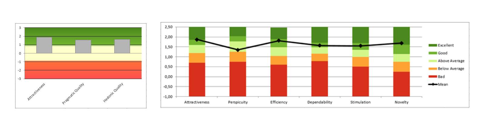
- Attractiveness is highest with 1,86
- The app is attractive and likable for the users.
- Hedonic Quality (Stimulation, Novelty): 1,62
- The users enjoy interacting and engaging with the app.
- Pragmatic Quality (Perspicuity, Efficiency, Dependability): 1,57
- The users find the app practicable and they can reach their goals.
- Compared to the Benchmark, our app has (very) positive results and a high relative quality.
Issues & Solutions
- 75% of users did not understand that they had to click on the map to select the store.
- Solution: Add a clear label or sentence like “Choose the store on the map”.
- 37.5% were somewhat confused by certain button labels
- Solution: Change button labels.

- 56.25% expected the + and – to be the other way around
- Solution:

- 81.25% were confused with exploring / zooming / moving the map of the supermarket.
- Solution: Implement auto center functionality.
- 68.75% did not swipe to find the snack promotions
- Solution: Categories could look more like tabs.
- Increase colour contrast to make categories stand out more.
- Add scroll bar.
- 31.25% were confused when adding contributors to a list.
- Solution: Use chips for contributors.

Takeaways
TODO